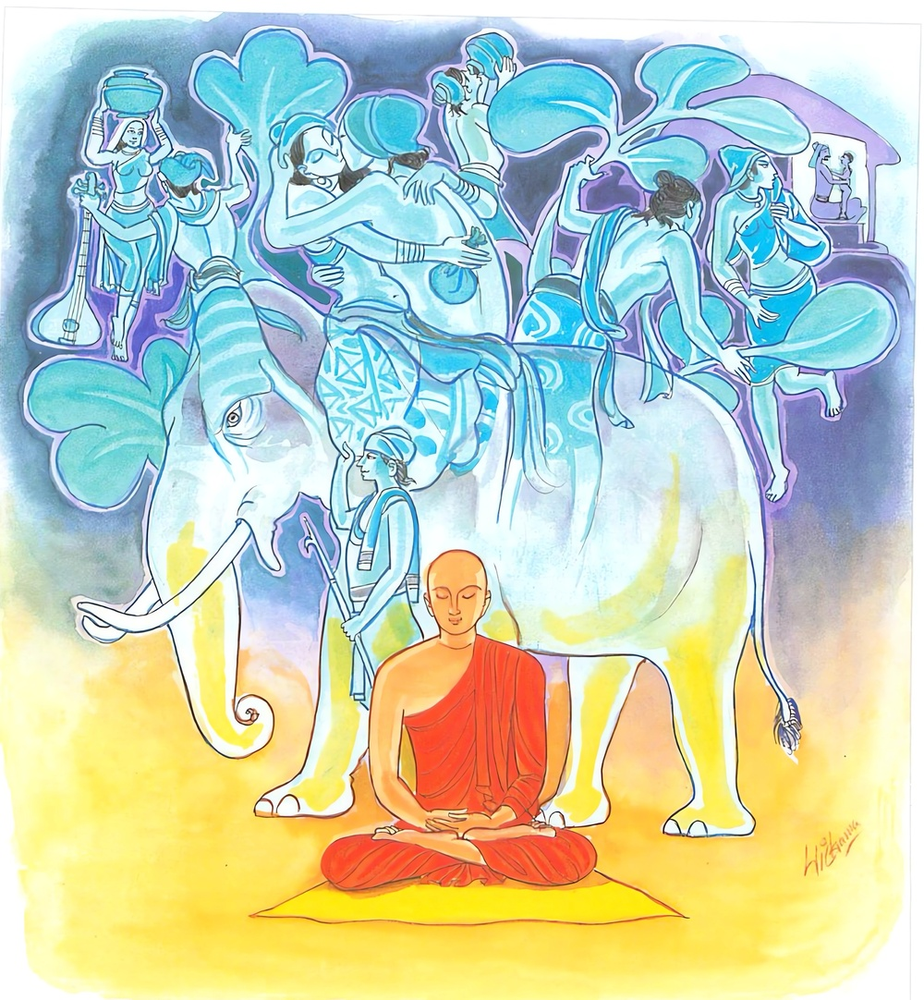

23-5 පස්වනි වු සානුසාමණේරයන් වහන්සේ පිළිබඳ කථා පුවත
මෙම කතාව සද්ධර්ම සාගරයෙන් ද කියවන්න.
ඉදං පුරෙ චිත්තමචාරි චාරිකං
යෙනිච්ඡකං යත්ථකාමං යථාසුඛං
තදජ්ජහං නිග්ගහෙස්සාමි යොනිසො
හත්ථිපමභින්නං විය අඞ්කුසග්ගහො.
මේ (අනවස්ථිත) සිත පෙර කැමැති අයුරින් කැමැති අරමුණෙහි සුව සේ බොහෝ කල් සැරි සරා ඇවිද්දේ ය. එය අද මම් නුවණින් ගිලි හුනු මද ඇති ඇතකු නිගන්නා අකුසක් ගත් ඇතරුවක්හු සෙසින්, නිගන්නෙමි (වළකන්නෙමි).

"ඉදං පුරෙති” යන මේ ධර්ම දේශනය ශාස්තෲන් වහන්සේ දෙව්රම වැඩ සිටියදී සානු” සාමණේර තෙරුන් නිමිති කරගෙන දේශනා කළහ. ඔහු එක් උපාසිකාවකගේ එකම පුත්රයායි. ඉක්බිති ඇය ඔහු ළමා කාලයේදීම පැවිදිකරවීය. ඔහු පැවිදිකළ තැන් පටන් සිල්වත් වුයේය, වත් සම්පන්න වුයේ. ආචාර්ය උපාධ්යාය වත් ද, ආගන්තුක වත් ද හොඳින් ඉටුකළේය. මාසයේ දින අටක් උදේම අවදීවී පැන් මළුවේ ජලය තබා බණ දෙසන මළුව අතුගා පහන් දල්වා මිහිරි ස්වරයෙන් ධර්ම දේශනය සදහා අඩ ගසයි. භික්ෂූන් වහන්සේලා ඔහුගේ උත්සාහය දැන පද භාගය (බණ කියැන්නැයි) සාමනේර හටම දැන් මගේ හද රිදේ. කය පීඩාදේ ආදී කිසියම් ප්රතිකාරයක් නොකොට ධර්මාසනයට නැග අහස් ගඟ ගලා බස්නා ලෙස ධර්මය දේශනා කර වඩින්නේ. මගේ දෙමාපියන්ට මේ පිං අනුමෝදන් කරමියි කියයි. ජීවතුන් අතර සිටින ඔහුගේ දෙමාපියෝ මෙසේ පින් දුන් බව නො දනිති. ඔහුගේ දෙවැනි ආත්ම භාවයක මවක් යකිනියක්ව උත්පත්තිය ලබා සිටියාය. ඕතොමෝ දේවතාවන් සමග පැමිණ බණ අසා සාමණේර භික්ෂුව විසින් දෙන ලද පින් අනුමෝදන් වෙමියි. දරුව කියයි. සිල්වත් වු භික්ෂුව දෙවියන් සහිත ලෝකයාට ප්රිය වේ. එම සාමණේරයන් කෙරෙහි ලජ්ජා බුහුමන් ගෞරව සහිතව මහා බ්රහ්මයන් මෙන් ද ගිනි කඳක් මෙන්ද සිතයි. සාමණේරයන් කෙරෙහි ගෞරවයෙන් එම යක්ෂණිය ගරු කොට බලයි ධර්මශ්රවණ යක්ෂ සමාගම ආදියේ දි සානු මාතා හෝ යයි කියා ඒ යක්ෂණියට - අග්ර ආසනය, අග්ර දිය, අග පිණ්ඩය දෙති. මහේක්ෂාඛ්ය යක්ෂයෝ ඇය දැක මාර්ගයෙන් මැත්වෙති. අසුනෙන් නැගිටිති. අනතුරුව ඒ සාමනේර නම වයසට පත්ව මුහුකුරාගිය ඉන්ද්රිය ඇත්තේ අනභිරතියෙන් පෙළුන්නේ. අනභිරතිය දුරු කිරීම සඳහා උත්සාහ නොහැකි වන්නේ වැඩුනු කෙස්, නිය ඇතිව කිළිටි අඳන සිවුරු ඇතේ, කිසිවෙකුටත් නොදන්වා පාසිවුරු ගෙන හුදකලාව මවගේ නිවසට ගියේය, උවැසිය පුතු දැක වැඳ මෙසේ කීවාය. දරුව ඔබ පෙර දින ආචාර්ය උපාධ්යාය සමග හෝ කුඩා සාමණේර නමක් සමග වැඩියේය. අද එකලාව වැඩම කළේ කුමක් හෙයින්ද? උන්වහන්සේ කළකිරුන බව පැවසුහ. එම උවැසිය නොයෙක් ආකාරයෙන් ගිහිගෙයි වාසයේ ඇති ආදීනව දක්වා පුතාට අවවාද දුන්නේද දැනුමක් ඇතිකරන්නට අපොහොසත්ව තමන්ගේ ධර්මතාවෙන් හෝ තමන්ට හැකි පමණින් සලකනෙමැයි සිතා දරුව සිටින්න. ඔබට කැඳබත් සකස්කරමි. කැඳ බී කරන ලද බත් කිසෙන් පසුව, ඔබට කැමති වස්ත්රයක් දෙමි කියා අසුනක් පනවා දුන්නාය. සාමණේර නම වාඩි වුයේය. උවැසිය ඉතා ඉක්මනින් කැඳ හා සෑයුතු ද සපයා දු න්නේය. අනතුරුව බත් සපයා දෙමියි නොදුරේ සිටි සහල් සෝදයි. එකළ එම යක්ෂණිය සාමණේර නම කොහේදැයි කිසියම් භික්ෂාවක් ලබත්දැයි ආවර්ජනා කරන්නේ ඔහු සිවුරුහරනට සිටින බව දැන මට දෙවියන් ඉදිරියේ ලජ්ජා උපදවන්නේදැයි, යම් විකෘතියට. වෙනස්වීමට අනතුරක් කරනෙමියි සිතා පැමිණ සිරුරට අවේශ වී ගෙල හරවා කෙල වැගිරෙමින් බිම වැටුනි. උවසිය පුතාට සිදු වූ මේ විකාර දැක වේගයෙන් ගොස් පුතා වැළදගෙන උකුලෙහි නිදිකර වුවාය. මුළු ගම්වැසියන් පැමිණ බලිකම ආදිය කළහ. උවැසිය අඩමින් මේ ගාථාව පැවසුවාය.
"වාතුඤසිං පඤ්ඤචදසිං යාච පස්ස අවයමි. "
යම් කෙනෙක් මසක් පාසා තුදුස්වක, තෙළෙස්වක, පසළොස්වක, හා සතවක, අටවක, නවවකත්, අෂ්ටාංග උපෝසථය රකින්ද, සෙසු පින්කම්වලත් යෙදේද, උන් හා සමග අමනුෂ්යයෝ සෙල්ලම් නොකරති. එහෙත් සානු සාමණේරයන් සමග අමනුෂ්යයෝ ක්රීඩා කරන බව පෙනේ. ඒ බව රහතුන්ගෙන් අසමු.
උපාසිකාවගේ ඒ වචනය අසා,
යම් කෙනෙක් පාටිහාරිය පක්ෂ උපෝසථය රකීද. අෂ්ටාංග උපෝසථය රකීද බ්රහ්මචරියාව රකීද. ඒ අය සමග අමනුෂ්යයෝ සෙල්ලම් නොකරති. කියා මෙසේද කීය. සානු තෙරණුවෝ බුදුන් අත්හරියි. කිසිදු පාප කර්මයක් විවෘතව හෝ රහසින් වත් නොකළ යුතුය. යම් කිසිවෙක් පව්කම් කරන්නේ ද කරවන්නේද, ශාසනයෙන් පිරිහී පව්කම් කරන්නට අපි දුක් පමුණුවමු - එසේ නොවන්නේ නම් අපි පලායමු මේ යක්ෂණියගේ වචනයයි.
මෙසේ පව්කම් කොට පක්ෂියෙකු මෙන් ඉගිල යන්නෙකුට වුවද මෝක්ෂය නම් නැත්තේය. කියා යකින්න සාමණේරයන් පිදුවාය. හෙතෙම ඇහැර බලා හිස කෙස් විසුරුවාගෙන හුස්ම ඉහළ පහළ හෙළමින් හඩන්නා වූ මව ද, රැස්ව සිටින ගමේ මිනිසුන් ද දැක. තමන් යක්ෂණියක විසින් ගත් බව නොදැන. මම කලින් පුටුවේ ඉඳගෙන සිටියෙමි. අම්මා සමීපයේ හාල් ගරමින් සිටියාය. දැන් වනාහී බිම වැතිරී සිටින්නේ මන්දැයි මවගෙන් විමසන්නේ,
මෑණියනි යමෙක් එකෝ මළ කෙනෙකු වෙනුවෙන් හඩති. නැතිනම් නොදක්නා කෙනෙකු වෙනුවෙන් හඩති. මා මළේ නැත. නො පෙනෙන සේ දුරගියේත් නැත. එසේ හෙයින් කවර හෙයින් අඬන්නේද? ඇසීය.
ඉක්බිති මව වස්තුකාම ක්ලේශකාම හැර පියා සසුනෙහි පැවිදිවී, නැවත වෙනස් වීමට සිවුරු හැරීමට ආ ගමන්නේ ආදීනව දක්වමින් මෙසේ කීවාය.
මළගිය අය වෙනුවෙන් හඬති. නොදක්නා අය වෙනුවෙන් හඬති. යමෙක් ගිහිගෙයි වාසය හැරපියා පැවිදි වුයේ ද ඔහු නැවත සිවුරු හරීද, ඔහු නොමළේත් මළා වේ. ශාසනයෙන් ඔහු මළා වේ. එබැවින් මම හඩමි.
මෙසේද කියා ගෘහවාසය ගිනිගොඩක වාසය මෙන්ද නරකාදියක වාසය මෙන්ද උපමා කොට. ගෘහවාසයෙහි ආදීනව දක්වන්නේ නැවත මෙසේ කිවාය. දරුව, ගිනි ගොඩකින් නික්මුණු ඔබ නැවත ගිනි ගොඩට පනින්න කැමති වේද නරක දුකින් මිදුණු ඔබ නැවත නරකයට අපායට වැටෙන්නට කැමති වේද?
දරුව ඔබට යහපතක් වේවා. මා විසින් මගේ පුතා ගිනිගෙන දිලියෙන්නා වූ ගෙයකින් වටිනා භාණ්ඩයක් ඉවත් කරන්නාසේ බුදු සසුනෙහි පැවිදි කරවුයෙමි. ඔබ නැවත ඒ ගිනි ගොඩ වූ ගෘහවාසයට බසින්නට කැමති වෙහිද මේ කාර්යයෙන් කාහට අවමන් කරන්නේ කවුරු අවමන් විදින්නේන්ද, මේ අවමන් විදීම දැක්වීමට මේ ගාථාව කීවාය.
ගිනිගත් ගෙයකින් වටිනා භාණ්ඩ ඉවත්කර ගෙන පලායන්නෙකු මෙන්, බුදු සසුන් පැවිදි වූ ඔබ නැවත ඒ ගිහිගෙට වැදීමට කැමති වන්නේ ද, එසේ කිරිමෙන් කවර හෙයින් අවමන් කරන්නේද අවමන් විදින්නේද හෙතෙම මවගේ මේ කීමෙන් පසුව, එය සලකා මෑණියනි මට ගිහි වීමෙන් අර්ථයක් නැතැයි කීයේය. ඉක්බිති මව, මැනැවි පුතුනියි තුටු පහටුව ප්රණීත භෝජන තනා වළඳවා. පුත්රය දැන් වයස කීයදයි ඇසීය. එවිට වයස නිසි පරිදි විසිවයස් සම්පුර්ණ බව දැන තුන්සිවුරු සපයා දුන්නාය. හෙතෙම පිරිපුන් පා සිවුරු ඇතිව උපසම්පදාවට පත්වුයේය.
ඉක්බිතිව ඔහුගේ සිත් හසර බලන ශාස්තෲන් වහන්සේ, පළමුව සිතේ පැවැති විපරිත බව උකටලී බව දැන සිත නම් විවිධ අරමුණුවල දීර්ඝ කාලයක් හැසිරෙන්නේය. එසේ වූ සිතට නිග්රහ නොකිරීමේ යහපත් බවත් නැත. එහෙයින් අංකුසයකින් (හෙන්ඩුවකින්) මත් ඇතෙකු දමනය කරන්නාක් මෙන් හීලෑ කරන්නාක් මෙන්, සිත දමනය කළ යුතුය. නිග්රහ කළ යුතුය. නිවනෙහි යෙදීම කළ යුතුයයි වදාරා මේ ගාථාව වදාළහ.
පෙරදී මගේ සිත සිතු ලෙස හැම තැනෙක
වැරදී ගිය අයුරු සිහියට ගෙන යන මතක
අංකුසයෙන් මතැතු හීලෑලන ලෙසක
විදසුන්නැණින් දමනය කරගමි යෙහෙක
එහි අර්ථය. ඉදංචිත්තං මේ සිතනම් මෙයින් පෙර රූපාදී අරමුණු වලද රාගාදී අරමුණු වලද, යෙන කැමති ලෙසින් යමක් කැමතිවන්ද එහි යෙදීම් වසයෙන්, යත්ථකාමං යම් කාම සුවයක් කැමතිවේද එහි හැසිරෙමින්. යථාසුඛං දීර්ඝ කාලයක් චාරිකා කළේය. අජ්ජ අහං පභින්නං දක්ෂ ඇත්ගොව්වකු විසින්මත් ඇතෙකු අඞිකුසග්ගහො අංකුසයෙන් හීලෑ කරන්නාක් මෙන්, විය යහපත් සිහියෙන් නිග්ගහෙස්සාමි අයාලේයාමට නොහැකි කොට දමනය කළෙමි. දේශනය අවසානයේදී සානු තෙරුන් සමග ධර්මශ්රවණය තුළ බොහෝ දෙවියන්ට ධර්මාභිසමය විය. ඔහු ත්රිපිටක බුද්ධ වචනය ඉගෙන "මහාධර්ම කථිකයකු වී වසර එකසිය විස්සක් සිට මුළු දඹදිව කළඹා පිරිනිවන් පෑවාහුය.